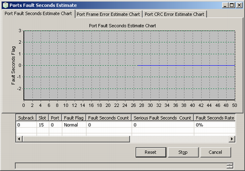

This describes how to monitor E1/T1 port fault seconds to know the transmission quality of the links on the E1/T1 port in real time.
Prerequisites
- The LMT runs normally.
- The communication between the LMT and the BSC is normal.
- All the interface boards are functional.
Context
The E1/T1 port fault seconds are listed in Table 1.
Table 1 E1/T1 port fault seconds
Name
|
Meaning
|
Fault
|
Fault indicates the BER on the E1/T1 port. Value range: Normal, Serious Fault.
|
Fault Seconds Count
|
A second during which one or more than one block error is detected is called block error second. The fault seconds count refers to the number of block error seconds.
|
Fault Second Rate
|
The ratio of the fault seconds count to the total seconds of the measurement period.
|
Serious Fault Seconds Count
|
Block errors refer to the bit errors during the transmission.
The serious fault seconds have the following features:
- There are more than 30% of block errors in a second.
- At least one serious disturbance period occurs in a second.
The serious fault seconds count refers to the total number of serious fault seconds.
|
Serious Fault Seconds Count Rate
|
The ratio of the serious fault seconds count to the total seconds of the measurement period.
|
Frame Error Number
|
Frame error number indicates the number of frame errors in a unit of time.
|
Crc Error Number
|
Crc error number indicates the number of CRC check errors in a time unit.
|
Procedure
- On the Trace & Monitor tab page, choose . A dialog box is displayed, as shown in Figure 1.
Figure 1 Ports Fault Seconds Monitoring Parameter dialog box
- Set the parameters in the Monitor Setting and View Setting areas, and then click OK.
- Port Frame Error Estimate Chart dialog box is displayed, as shown in Figure 2.
Figure 2 Results of port fault seconds window (Port Frame Error Estimate Chart)
- Click the Port Fault Seconds Estimate Chart tab. A dialog box is displayed, as shown in Figure 3.
Figure 3 Results of port fault seconds window (Port Fault Seconds Estimate Chart)

- Click the Port CRC Error Estimate Chart tab. A dialog box is displayed as shown in Figure 4.
Figure 4 Results of port fault seconds window (Port CRC Error Estimate Chart)
- Click Reset to reconfigure the parameters in Figure 2. Click Stop to stop the monitoring task. Click Cancel to quit the monitoring task.
Copyright © Huawei Technologies Co., Ltd.